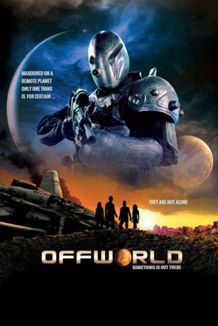

#3796 The Lost Planet
Alternativ: Dark Space
 
 IMDB-Wertung: 3.8 / 10
IMDB-Wertung: 3.8 / 10  Metascore: 0
Metascore: 0 
In weit entfernter Zukunft hat die Menschheit entlegene Galaxien besiedelt. Sechs Freunde, auf der Suche nach etwas Spaß und Abenteuer, haben sich aufgemacht, einen unbekannten Planeten zu besuchen. Doch es gibt Probleme mit ihrem Raumschiff und sie stranden auf unerforschtem Terrain. Während sie versuchen, das Raumschiff wieder flott zu kriegen und Hilfe zu bekommen, merken sie, dass sie nicht allein sind. Irgendetwas ist da draußen, sie sind umzingelt von einer unbekannten Gefahr. Ein unerbittlicher Kampf beginnt - ums nackte Überleben.
Jahr: 2013
Dauer: 90 Minuten
FSK: 12
Land: USA Studio: Halcyon International PicturesTonspuren: DTS - ,
Untertitel: Deutsch,
Auflösung: 1080p (1920x960) Größe: 5816 MB
Genre: Sci-Fi
Regisseur: Emmett Callinan
Drehbuch: Bob Carroll Jr.
Soundtrack:
Darsteller:
- Keith Reay als Devin
- Steve West als Jack
- Alana Dietze als Shelly
- Tonya Kay als Flower
- Joseph Darden als Shaun
- Avital Ash als Kristy
- Freddie Johnson als Soldier 1
- Preston James Hillier als EVS Commander Mahoney
 Jose Rosete als Extra Terrestrial 2
Jose Rosete als Extra Terrestrial 2- John Alton als
- Maui Toca als
- Sharlene Brown als Spaceport Attendant
- Tim Martin als Soldier 2
- Blake Edgerton als Soldier 3
- Francisco Espalliat als Extra Terrestrial 1
- Marcus Jordan als Extra Terrestrial 3
- Jeff Savage als Spaceport Computer Voice
- Tom Callinan als Commander's Computer Voice
- Stewart McKenna als Spaceport Patron
- Chrome Wolf als
- Zander Martin als
- Sean Buck als Spaceport Patron
- Ashleigh Buck als Spaceport Patron
- Sam Schlesinger als Spaceport Patron
- Abigail Buck als Spaceport Patron
- Kyle Wright als
- Nancy Dobson als Spaceport Patron
- Tom Shapiro als
- Zang Angelfire als Intergalactic Traveler
- Neil Johnson als
- Simon Cardoza als
- Patricia Grey als
- Patrick McManus als
Datei: X:\2013(I-M)\Lost Planet, The (2013, FSK12, 1920x960).mkv seit 14.06.2016
Festplatte: HD 2013(I-Z)-2014(A-Z)
 Es gibt insgesamt 89 Filme in der Gruppe '2013(I-M)'
Es gibt insgesamt 89 Filme in der Gruppe '2013(I-M)'